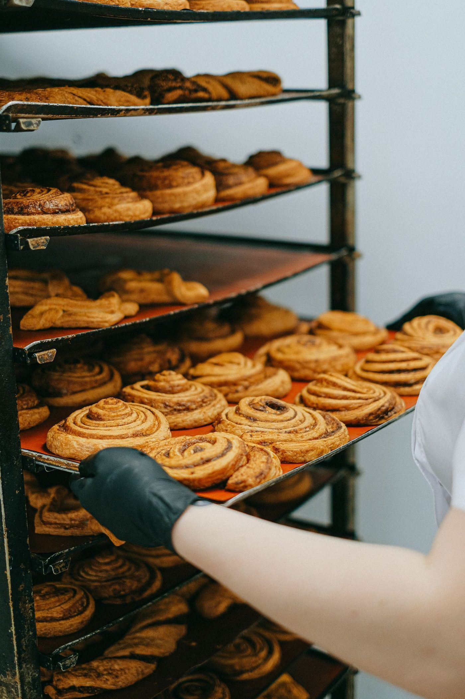

Scenic Route Bakery
An East Village artisan bakery and coffee hub in Des Moines since 2001, family owned, with pastries, Intelligentsia coffee, and lunch daily.

About
Scenic Route Bakery is an artisan bakery and coffee hub at 350 E Locust St Ste 104 in Des Moines' East Village, family owned since 2001 and in its current space since late 2014. The bakery case holds artisan pastries, the bar pours Intelligentsia coffee, lunch runs daily from 11 AM to 3 PM, and the room offers indoor and outdoor seating with free Wi-Fi and outlets.
Services
Artisan pastries
Artisan pastries: cinnamon rolls, monkey bread, chocolate pinwheel, croissants, scones, hand pies, creme brulee, and bread pudding.
Coffee with Intelligentsia beans
Coffee with Intelligentsia beans, including the Honeybee latte and Cuban espresso.
Lunch daily 11 AM to 3 PM
Lunch daily from 11 AM to 3 PM: sandwiches, soups, salads, and quiche.
Breakfast and a place to work
Breakfast and lunch with indoor and outdoor seating, free Wi-Fi, and outlets.
Space available for rent Monday to Saturday
Online ordering is available for pastry and whole-bean coffee; call to ask how to order.
Gallery


All gallery photos are stock photos, labeled as such. They show the kind of work and setting described on this page, not this business.
Visit
Contact
Call to book: +1 515-288-0004 Email: scenicroutebakerydsm@gmail.com
Scenic Route Bakery serves Des Moines, IA. Questions? Call +1 515-288-0004.